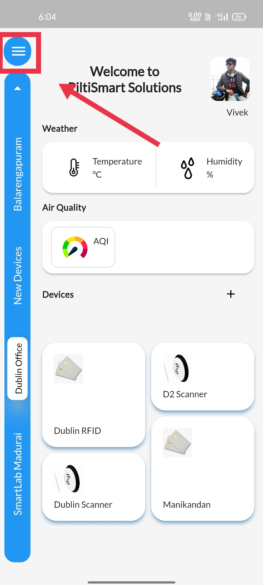

STEP 1One of the way to Access the device telemetry&is simply clicking on the devices displayed in the home page itself&the devices displayed corresponding to the asset opted in the side panel. |
 |
STEP 2You can see different devices displayed in the home page& after opting different asset in the side panel. |
 |
STEP 3Another way to Access the device telemetry is, Using dashboard |
 |
STEP 4Click on the device relationship tree option available. |
 |
STEP 5You are displayed with assets and devices.&Tap open the device that you wanted to access the telemetry using the pop-up button |
 |
STEP 6
Select the more option available, to access device telemetry.&You can also notice other devices corresponding to the asset displayed in the side panel. |
 |
STEP 7Latest telemetry, displays recent telemetry entries. |
 |
STEP 8History telemetry, displays you with series day-wise telemetry entries.&The navigation bar available at the bottom of the screen allows you to, navigate different date and time. |
 |